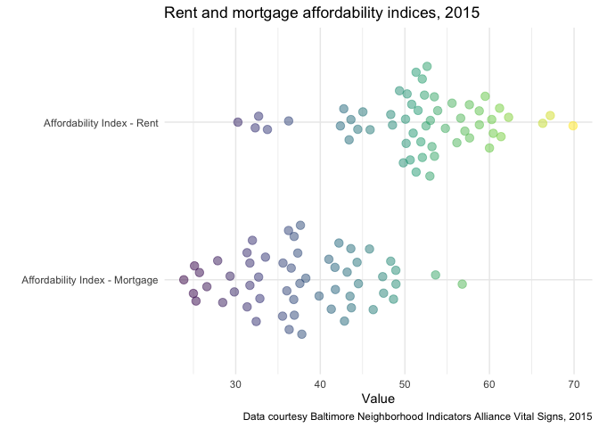

The goal of baltimoredata is to make data related to Baltimore City, Maryland more accessible and consistent for R users. The package is designed to work well with the mapbaltimore and bcpss packages that I am also developing.
Currently, this package only includes two data sets: the Baltimore Neighborhood Indicators Alliance (BNIA) Vital Signs data between 2010 and 2018 and the definitions for the variables included in the Vital Signs data.
You can install baltimoredata with the remotes package:
remotes::install_github("elipousson/baltimoredata")
library(baltimoredata)
library(dplyr)
#>
#> Attaching package: 'dplyr'
#> The following objects are masked from 'package:stats':
#>
#> filter, lag
#> The following objects are masked from 'package:base':
#>
#> intersect, setdiff, setequal, union
library(ggplot2)The BNIA Vital Signs data is useful for making comparisons between different areas of the city, between multiple years, and multiple related variables. For example, see the beeswarm plot below comparing the BNIA affordability indices for rent and mortgage:
vital_signs_2010_2018 %>%
filter(indicator %in% c("affordability_index_mortgage", "affordability_index_rent"),
year == 2015) %>%
ggplot(aes(x = label, y = value, color = value)) +
ggbeeswarm::geom_quasirandom(alpha = 0.5, size = 3) +
coord_flip() +
theme_minimal() +
scale_color_viridis_c(guide = FALSE) +
labs(title = "Rent and mortgage affordability indices, 2015",
x = "",
y = "Value",
caption = "Data courtesy Baltimore Neighborhood Indicators Alliance Vital Signs, 2015")
Note that all BNIA Vital Signs Indicators are available for all years. The vital_signs_indicators provides labels, definitions, and the years available for all BNIA Vital Signs.
glimpse(vital_signs_indicators)
#> Rows: 177
#> Columns: 7
#> $ label <chr> "Total Population", "Total Male Population", "Tot…
#> $ section <chr> "Census Demographics", "Census Demographics", "Ce…
#> $ source <chr> "U.S. Census Bureau", "U.S. Census Bureau", "U.S.…
#> $ normalization_source <chr> NA, NA, NA, NA, NA, NA, NA, NA, NA, NA, NA, NA, N…
#> $ definition <chr> "The total number of persons of all ages that liv…
#> $ indicator <chr> "total_population", "total_male_population", "tot…
#> $ years_available <list> [2010, 2010, 2010, <2010, 2016, 2017, 2018>, <20…